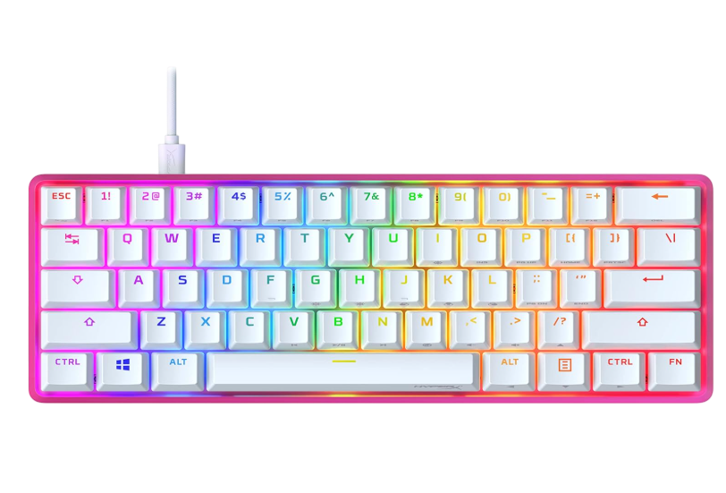

Teclado Mecanico Hyperx

Categoria:Acessórios
Preço:R$ 599,99
Estoque:9 unidades
Descrição: Teclado HyperX Alloy Origins 60 Rosa, estrutura em alumínio, conexão USB-C, com switches mecânicos de alta precisão e iluminação RGB, ideal para estudos, trabalho e jogos no dia a dia.
Compre aqui Voltar ao catálogo